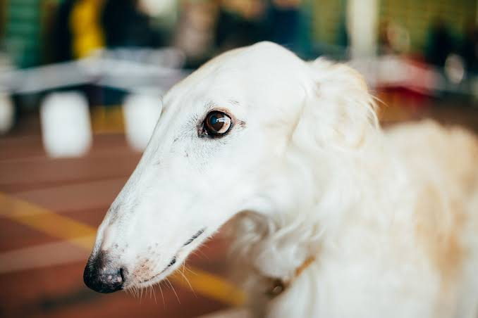
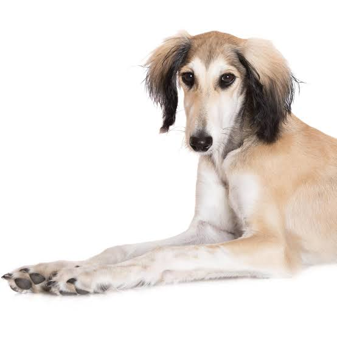
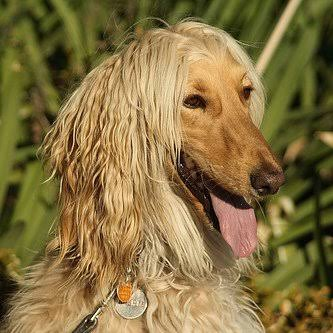

El borzoi es una raza de perro originaria de Rusia, de la familia de los lebreles. Fue originalmente criado para cazar lobos y liebres, actualmente es muy buscado como animal de compañía.
El borzoi es un gran lebrel ruso que se parece a algunas razas de Asia Central como el lebrel afgano, el saluki y el taigan kirguís. Es grácil, fuerte y veloz, alcanzando una altura de entre 66 y 79 cm y un peso desde 25 hasta 48 kg.
Cubierto por una espléndida capa de pelo ondulado, se mueve con gran distinción y elegancia. Existe en todos los colores, aunque los más apreciados son el blanco uniforme, el blanco con manchas grises, rojas y atigradas.
La esperanza de vida estimada es de 10 a 12 años. Uno de cada cinco muere de vejez, con una media de entre 10 y 11.5 años. El perro más longevo vivió hasta 14 años y 3 meses.
Los perros que están en buena forma física y son vigorosos desde su juventud hasta la mediana edad son más vigorosos y saludables que los perros mayores, en igualdad de condiciones con todos los demás factores.
Tiene una cabeza larga y angosta, orejas pequeñas, tórax ahuecado pero estrecho; cuartos traseros largos y musculosos. Su cola es larga y encorvada y su pelaje es sedoso y puede ser liso o ligeramente rizado. Casi siempre es de color blanco con manchas oscuras. Es notorio por su elegante apariencia.

El saluki, conocido comúnmente como el galgo persa o perro real de Egipto, es quizás la más vieja casta conocida de perro domesticado y el más antiguo de los lebreles, se cree descendiente de los lobos del desierto de Ara.
Esta raza ha sido históricamente criada en el Creciente Fértil, donde se originó la agricultura. Los beduinos los tienen en gran estima y los utilizan para la cacería de gacelas y como animales de compañía.
Los salukis tienden a ser animales independientes que requieren ser entrenados pacientemente y son gentiles y afectuosos con sus dueños.
El nombre de la raza apareció primero por escrito en la poesía árabe preislámica y puede haberse derivado de "Saluqiyyah", la palabra árabe para el Imperio Seléucida.
El aspecto general del Saluki es uno de gracia y simetría. Dos tipos de manto - liso y "emplumado"- son evidentes en el acervo genético de la raza. Esta última variedad tiene flecos de luz en la parte posterior de las piernas y los muslos. La piel en ambos tipos es sedosa y de baja muda, en comparación con otras razas.
Reservado con los extraños, pero no es nervioso ni agresivo. Digno, inteligente e independiente.

El lebrel afgano es una raza de perro originaria de Afganistán, con el patrocinio del Reino Unido, de la familia de los lebreles. Tiene un pelaje característico, muy largo, fino y sedoso, que precisa de cuidados continuos ya que se enreda, llegando a perder su brillo.
A nivel de inteligencia, está posicionado en la escala con el número 79 de la clasificación de Stanley Coren acerca de La fabulosa inteligencia de los perros.
El origen de esta raza es posible que se encuentre en la raza Saluki, que habría llegado a Afganistán a través de Persia.
Ya en Afganistán, el Saluki necesitaría un pelaje más apropiado para el hostil clima de las montañas de este país, desarrollando el largo pelaje que caracteriza al lebrel afgano actual, y que atrae a las personas que adquieren perros de esta raza
El color del pelo puede ser de cualquier tipo. Son ágiles y veloces. Respecto al carácter, estos perros suelen ser dependientes.
El origen del galgo afgano es antiquísimo, con los primeros registros aproximadamente en el año 1000 a. C., en la zona donde se encuentra actualmente Afganistán. Fue utilizado como perro de caza.